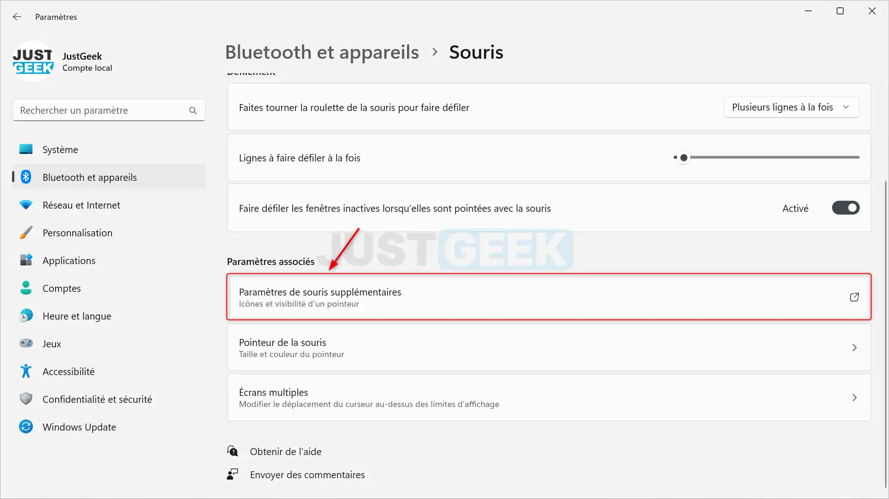
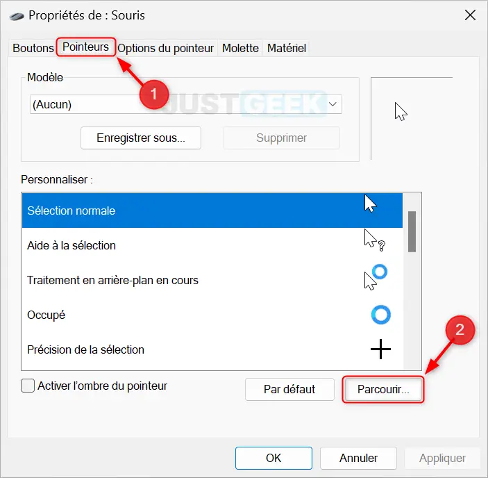

Sélection normale (default)
Sélection avec aide (help)
Sélection de lien (pointer)
Tâche en arrière plan (progress)
Occupé (wait)
Précision (crosshair)
Sélection de texte (text)
Déplacer (move)
Interdit (Not-allowed)
Redimension verticale (n-resize)
Redimension horizontale (e-resize)
Redimension diagonale 1 (nwse-resize)
Redimension diagonale 2 (nesw-resize)
Comment modifier son curseur ?

- Choisir un cuseur sur le site favorisxp, Deviant Art, ou encore le sub reddit r/cursor. Vous pouvez aussi en créeer un avec l'application RealWorld Cursor Editor.
-
Après avoir trouvé le curseur et l'avoir téléchargé, aller dans les paramètres de la souris de windows

puis cliquez sur paramètres supplémentaires. -
Cliquez sur "Pointeurs", cliquez sur aucun dans les modèles, puis modifier chaque curseur un par un.
 - N'oubliez pas d'appuyer sur "enregistrer sous..." et de donner un nom.
- Appuyez enfin sur appliquer.
Cliquez-ici pour avoir un tuto pour créer une extension web
Créer une extension web
-
Créer un fichier manifest.json.
Créer un fichier popup.html pour l'interface utilisateur.
Créer un fichier popup.js.
Créer un fichier background.js (si besoin uniquement !). -
Compléter le fichier manifest.json.
Voici ci contre un exemple :

- Penser a créer les 3 icones aux différentes tailles (16*16 ; 48*48 ; 128*128), de vérifier que la version du manifeste est bonne, et que les permissions nécessaires sont bien écrites.
- Compléter le fichier background.js. Afin de le compléter : il est conseillé de chercher la syntaxe sur internet.
- Compléter le fichier popup.html : ce sera la page qui sera affichée quand l'utilisateur cliquera sur l'extension depuis son navigateur.
- Compléter enfin le fichier popup.js qui contiendra les codes principaux en lien avec la popup.
-
Pour Firefox :
- Compacter le fichier au format '.zip' puis rennomer afin de mettre au format '.xpi'.
- Eberger l'extension sur un site et créer un lien pour pouvoir y accéder.
- Afin que l'extension soit dissponible pour tous, il faut l'installer sur le Chrome Web Store. Pour cela, il faut que les équipes de Chromes valident l'extension et poseront peut être des questions.
- Si vous n'avez pas envie de faire des démarches, vous pouvez aller sur le panneau des extensions, activer le mode développeur et donner le fichier contenant votre extension ou le fichier manifest.json en fonction du navigateur.